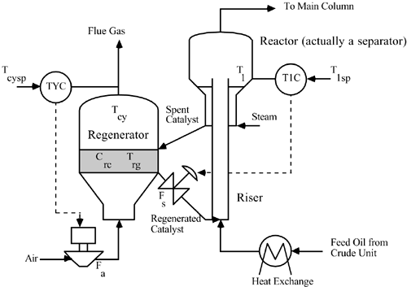

| [ Team LiB ] |
|
M14.4 Fluidized Catalytic Cracking UnitA fluidized catalytic cracking unit (FCCU) is used to produce the majority of gasoline in an oil refinery. A simplified process schematic and instrumentation diagram is shown in Figure M14-4. Heavy oil feedstock from the crude unit is mixed with recirculating catalyst and reacted in a riser tube. The catalyst cracks the oil to form lighter hydrocarbons. The lighter hydrocarbon products are separated from the catalyst in the reactor (which is actually a separator; it is called a reactor for historical purposes). The spent catalysis (which contains a great deal of carbon) is sent to the regenerator, where partial combustion is used to remove the carbon from the catalyst. Regenerated catalyst (manipulated variable) is recirculated back to mix with the inlet feed oil from the crude unit. The important measured variables are reactor (separator) temperature (T1) and the regenerator gas temperature (Tcy). The manipulated variables are the catalyst recirculation rate (Fs) and regenerator air rate (Fa). Figure M14-4. FCCU control strategy. Fs and Fa are manipulated. T1 and Tcy are measured. The steady-state input values are 294 kg/s (Fs), 25.35 kg/s (Fa) and the output values are 776.9°F (T1) and 998.1 (Tcy), the regenerator temperature (Trg) is 965.4°F. Assume that the manipulated inputs can vary by ± 50% of the nominal steady-state values. |
| [ Team LiB ] |
|